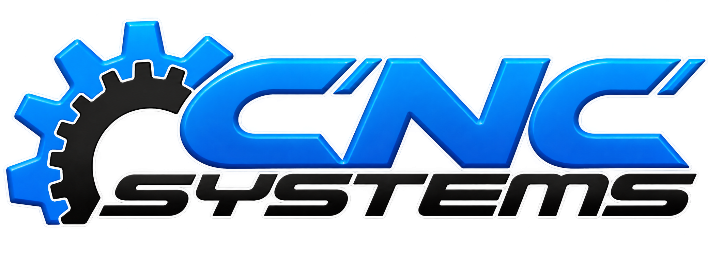

Soluciones industriales
Tecnología, precisión y servicio para tu maquinaria
Pasa el ratón por el centro o pulsa para descubrir nuestros servicios

Tecnología, precisión y servicio para tu maquinaria
Pasa el ratón por el centro o pulsa para descubrir nuestros servicios